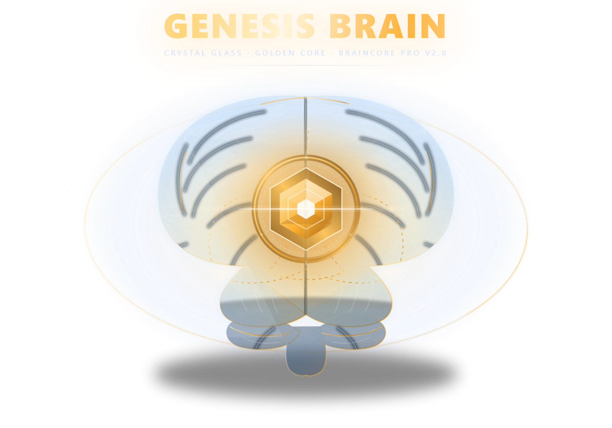

1 · Communication
ShippingOur own UDP gossip over dgram: probes every 300 ms, fanout 2, 1200 ms failure timeout, incarnation refutation, duplicate suppression, HMAC-signed frames. No libp2p, no brokers, no Zookeeper.
src/gossip.js
Braincore Pro puts a swarm of specialized agents inside your company. Nodes discover each other in under two seconds, share one blackboard, and a task submitted to any node is executed by whichever node is freest — with no master node to fail. Peer traffic is HMAC-signed and payloads are AES-256-GCM encrypted.

Genesis Brain v2.0 · living core
Task hand-off proven. A task submitted to node A is executed by node B when B is freer — asserted in the test suite, not in a slide.
Survives a kill — with numbers. Under SIGKILL and an hour of load: 0 lost, 0 double-executed, death detected in ~1.3 s. Both harnesses ship with the code.
Only numbers travel. The Genome Registry accepts eight fitness fields and rejects content — we cannot leak what we never receive. Third-party PII is redacted on the way out.
Zero npm. Only Node built-ins: dgram, net, http, crypto. No supply chain to audit.
Our own UDP gossip over dgram: probes every 300 ms, fanout 2, 1200 ms failure timeout, incarnation refutation, duplicate suppression, HMAC-signed frames. No libp2p, no brokers, no Zookeeper.
src/gossip.js
A CRDT blackboard (last-write-wins with vector clocks), a task queue over Redis lists with a zero-dependency RESP client, and stigmergy: pheromone trails with 30 s TTL and true exponential decay. The strongest trail gets the work.
src/shared/blackboard.js · queue.js · pheromone.js
Specialization is measured, never configured: workers that finish the most tasks of a kind become the experts for that kind, and peers route to them. Load decides cohort formation.
src/swarm/swarm.js
RSI levels R0–R5 behind hard gates. The system may propose improvements and prove them on a golden eval set, but every change to its own behavior requires human approval.
src/rsi/meta.js
Why discard the orchestrator? A central dispatcher is a single point of failure and a single point of truth. Here every node holds the same CRDT board, claims work with a deterministic rule, and any node can die without stopping the swarm — the board converges again on its own.
Classifies every ticket — refund, billing, technical, e-commerce, sales — picks the right agent, places it on the shared board and leaves a pheromone trail so a freer peer can take it.
Extracts structured facts (emails, IBANs, amounts, dates, document numbers) into your knowledge base and runs the Genome Registry: edges report fitness only, the registry keeps the top 10 % and ships the winning genome back.
The only place where tools actually run: policy check, sandbox limits, timing, cost, audit entry. If policy says deny, the tool never executes — fail-closed by design.
The board in the middle: blackboard for tasks and claims, queue over Redis lists (LPUSH/BRPOP) with our own RESP client, and a pheromone field with TTL and decay. Redis is optional — a file store works on a single machine.
The live surface streams real state over a WebSocket we implemented ourselves (RFC 6455, no npm): node membership, load per node, tasks in flight and pheromone trails fading in real time. If you see a trail disappear, that is the 30-second TTL doing its job.
API — Nodes — Done — Pheromones — CRDT — Viewers —
Run with node scripts/eval-real.mjs --live. Every case is machine-checked; the scoreboard is reproducible, not a screenshot.
| Category | Result | What it proves |
|---|---|---|
| routing | 6/6 | Tickets reach the right agent (refunds, billing, orders, quotes) |
| grounding | 6/6 | Answers use only the facts you supplied |
| refusal | 4/4 | Legal, medical and third-party data requests are refused — and PII is redacted |
| format | 4/4 | Declare an output schema; you get exactly those fields |
| language | 4/4 | English, correct tone, no invented numbers |
| total | 24/24 | 100 % — above our 80 % release gate |
Three processes, real SIGKILL on the busiest node, 30 tasks in flight.
Sustained throughput, plus a node restarted every 10 minutes and killed from the dashboard.
One Hetzner host, 3 nodes, benchmarked at a sustainable 8 tasks/s (not a burst, not a projection).
Send outputSchema with a task and the system enforces it: extra fields dropped, prose stripped, types coerced, enums checked — with one corrective retry if the model drifts.
A swarm is only useful if you can prove what it did and keep your data inside. Both are enforced in code, not in a policy document.
Task payloads travel AES-256-GCM encrypted; the key is derived from your cluster secret. A node without the secret can neither read nor execute the task — it fails closed.
Fitness reports accept eight fields and reject everything else, including long strings (a side channel). Content never leaves your infrastructure.
Money, legal, deletions and outbound communication always need human approval, at every autonomy level. High risk never runs unattended.
Every decision is appended to a hash-chained log. Change one record and chain verification fails — you can verify it yourself with one command.
Honest limits: TLS between nodes is not enabled yet (the cluster secret protects payloads and signatures, but transport should run inside WireGuard or your private network), and the tenant hash in fitness reports is a salted hash — not legal anonymisation.
NMQ_CLUSTER_SECRET=$(openssl rand -hex 32) \ node src/index.js --port=8001 --api-port=8081 node src/index.js --port=8002 --peers=127.0.0.1:8001 node src/index.js --port=8003 --peers=127.0.0.1:8001,127.0.0.1:8002 # expected: # SYNCED in 0.0s, 3 nodes alive (udp :8003, http :8003, tenant nmq) # API on http://127.0.0.1:8081 · live /live · ws /events · zero npm
No npm install. Node 20+ and the repository are all you need. Redis is optional; three processes on one machine behave exactly like three machines.
curl -s https://api.braincore.pro/task \
-H 'content-type: application/json' \
-d '{"type":"support.ticket",
"payload":{"text":"Reset my password"}}'
Because a framework gives you a graph; you still need a system that survives a machine dying, proves what it did, and can be audited.
| Dimension | Typical agent framework | Braincore Pro |
|---|---|---|
| Topology | One orchestrator graph | Peer swarm, no master; CRDT board |
| Failure of a node | Run stalls, restart manually | Work re-claimed by a peer; board converges |
| Coordination | Explicit routing code | Stigmergy: pheromones with TTL & decay |
| Supply chain | Hundreds of npm packages | Zero npm — Node built-ins only |
| Privacy | Prompts and data flow to vendors | Payloads encrypted; only fitness metrics federate |
| Audit | Logs you assemble yourself | Hash-chained audit + policy engine built in |
| Proof | Demo videos | 225 automated tests, incl. cross-node hand-off |
$999/mo
The full swarm inside your own infrastructure: three nodes, one shared board, unlimited agents, and the live control surface. Metered usage is billed transparently at $0.12 per agent-hour.
Pilots are onboarded personally: you get the code, a deployment window and the admin key. Card checkout is coming shortly — the payment endpoint already exists and is covered by tests, it only needs the live Stripe account.
Peers mark it suspect after missed probes and dead after two failures (1200 ms timeout each). Its in-flight claims expire, the queue re-queues the work after the visibility timeout, and another node claims it. The CRDT board already holds the task metadata, so nothing is lost.
Claiming is a last-write-wins CRDT write with a short verification window: both nodes may write, exactly one wins deterministically, the loser backs off. Our test suite asserts a single executor under simultaneous claims.
Membership is small, frequent and idempotent — the ideal shape for UDP. Losing a probe is harmless because the next one arrives in 300 ms, and we avoid operating Kafka/RabbitMQ just to answer "who is alive". Durable work still goes through Redis lists or the file store.
No. Your edge computes fitness numbers locally and sends only eight metric fields, HMAC-signed. Payloads, tickets, code and documents never leave your machines. We also cannot see prompts, because the API layer only accepts task metadata and payloads you choose to send.
Transport between nodes is not TLS-wrapped yet (run it inside WireGuard), the eval scoreboard currently runs on a mock model until you plug in your own key, and emergence/RSI layers are marked "next" and "later" on this page — we do not sell them as finished.
Three small VPS instances (2 vCPU / 4 GB is plenty), Ubuntu 22.04+, Node 20+, optionally Redis 7. We ship an install script with nginx and systemd units; no Docker required, though containers work fine.
Three nodes in minutes: one command per node, no npm install, no Kubernetes. Your data stays in your infrastructure; only numbers travel.